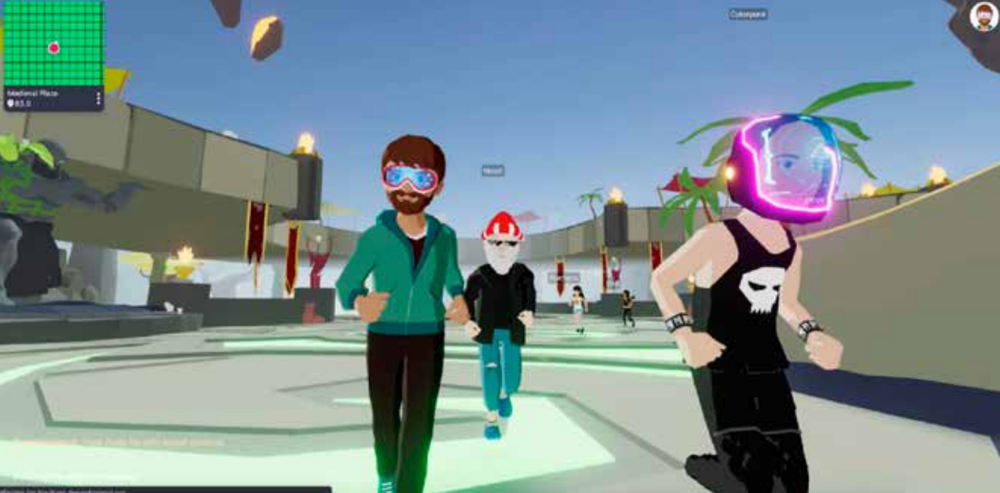

A reported feature on virtual land speculation in the metaverse—following creators, investors, and platforms such as The Sandbox and Decentraland to examine how blockchain-based worlds turn land, creativity, and governance into tradable assets.

This piece examines the early-stage social life of emerging technologies—before standards, regulation, or stable use cases are in place—through the phenomenon of virtual land speculation in the metaverse.
Excerpt 1 · The price shock: when virtual land enters the speculative spotlight.
On November 23, 2021, a parcel of digital land in Decentraland sold for $2.43 million (about RMB 15.52 million). On November 30, The Sandbox set a new record with a $4.3 million sale (about RMB 27.39 million). Soon after, the singer JJ Lin announced on Twitter that he had bought three plots in Decentraland; according to estimates in overseas media, the three plots cost roughly $123,000 (about RMB 784,000).
Why can virtual land reach prices comparable to real-world property—and what exactly are people buying?
Excerpt 2 · Creative labor before speculation: why artists enter the metaverse.
For Chili Oil, a designer based in Foshan, NFTs offered something traditional art markets rarely provide: continuous income. Unlike physical artworks, which are detached from artists once sold, NFTs allow creators to receive a share of every resale on the secondary market. After researching the field, he chose The Sandbox as his entry point into the metaverse.
Excerpt 3 · Coding scarcity: how virtual land mimics real estate.
These virtual plots operate almost exactly like real-world real estate. The Sandbox has only 166,464 usable Land parcels—fixed forever—and each parcel is sold after being uploaded to the blockchain, which is meant to guarantee uniqueness. When several 1×1 parcels are merged into a larger plot, it becomes an ESTATE. Typical ESTATE sizes include 3×3, 6×6, 12×12, and 24×24. These parcels are sold through staged presales and public sales, and can be resold on third-party NFT marketplaces such as OpenSea. Chili Oil described it to me this way: “A 1×1 Land is about the size of an NBA basketball court in real life.”
Excerpt 4 · Ownership without protection: risk, theft, and governance limits.
Despite its promise of uniqueness and security, NFT-based ownership remains fragile. After entering his private key into a phishing link that appeared official, Chili Oil lost one of his Land parcels. Because NFTs emphasize anonymity, recovery is often impossible once assets are stolen.